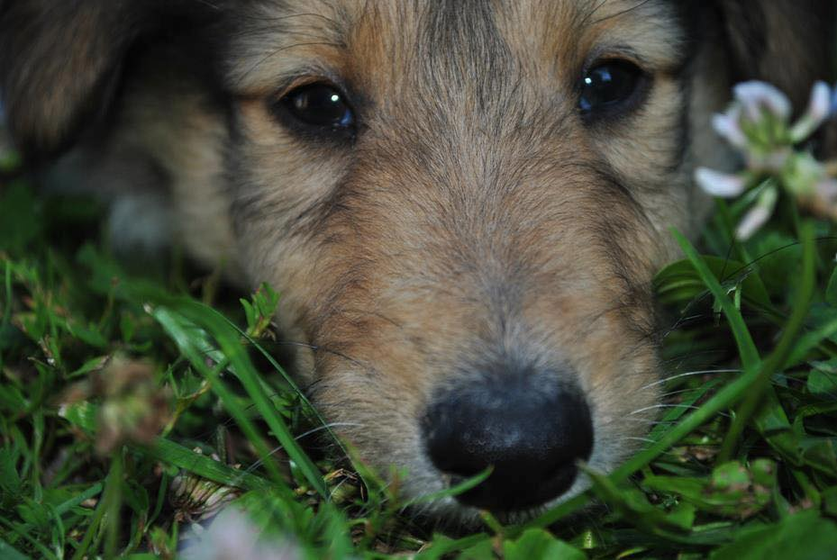
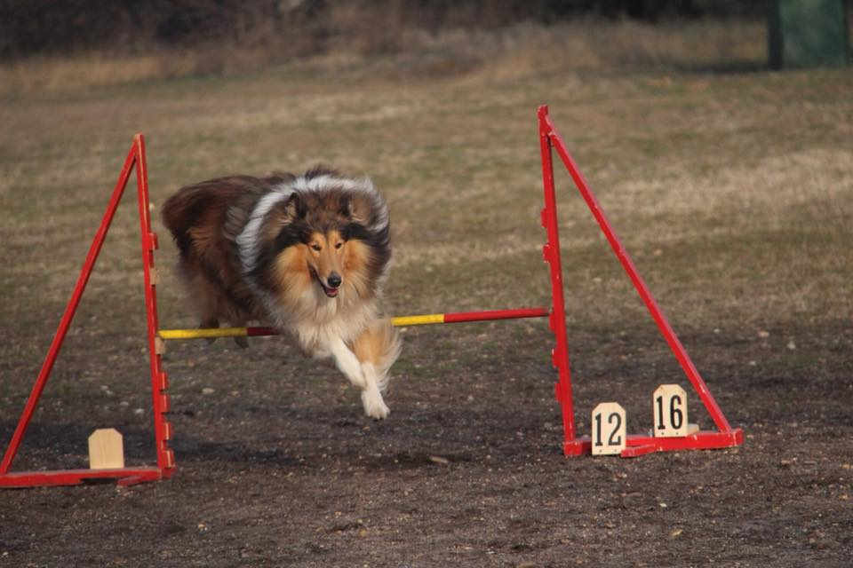
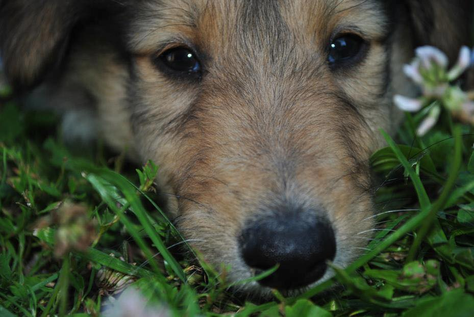
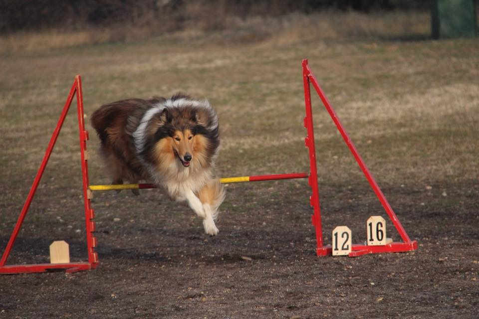

Kedves Honlaplátogatóm!
Ha megengeded, mondanék pár szót magamról, hogy megismerhess és könnyebben dönthess, szeretnél-e velem együtt dolgozni.
2000. október 28-án születtem Budapesten, és már egészen kisgyermekkoromtól rajongtam a kutyákért. Középső csoportos óvodás voltam, amikor bejelentettem otthon, nekem kell egy négylábú, szőrös vakkancs. Csekélyke 6 év várakozás után az álmom valóságá vált, és hazahozhattam az én hűséges társamat, egy 3 hónapos skót juhászkutyát, akinek rengeteget köszönhetek. Tulajdonképpen ezzel kezdődött el szakmai karrierem is, amit akkor még nem is sejthettem. Ellátogattunk a közeli kutyaiskolába, ahol később oktatni is kezdtem. Különféle csoportokat vezettem, voltam kezdő csoport vezetője, óvodás kutyák gazdáié, majd később a haladó csoportban is tevékenykedtem. Rengeteg tapasztalatot szereztem ezidő alatt. Mindeközben magántanítványaim is voltak akikről a referenciák menüpontban olvashattok bővebben. 9 éve foglalkozom kutyákkal, és eddig mindig meg voltak elégedve a munkámmal, legyen szó csoportos foglalkozásról, vagy egyéni oktatásról. Számos sportot kipróbáltam a saját kutyámmal, és a mai napig igazolt agility versenyzők vagyunk, igaz már csak veterán kategóriában. Rengeteg tanfolyamon részt vettem és úgy gondolom hogy mindig van hova fejlődni és a szakmai előbbrejutáshoz mindig tágítanunk kell az ismeretkörünket, mert ahány kutya, annyi módszer. Ha felkeltettem az érdeklődésedet és szeretnél a kutyáddal harmonikusabb kapcsolatot, esetleg valamilyen új sporthoz támadt kedved, keress bátran az oldal alján megadott elérhetőségek valamelyikén. Ha nem reagálok azonnal, valószínűleg kutyázom! :))
Ha megengeded, mondanék pár szót magamról, hogy megismerhess és könnyebben dönthess, szeretnél-e velem együtt dolgozni.
2000. október 28-án születtem Budapesten, és már egészen kisgyermekkoromtól rajongtam a kutyákért. Középső csoportos óvodás voltam, amikor bejelentettem otthon, nekem kell egy négylábú, szőrös vakkancs. Csekélyke 6 év várakozás után az álmom valóságá vált, és hazahozhattam az én hűséges társamat, egy 3 hónapos skót juhászkutyát, akinek rengeteget köszönhetek. Tulajdonképpen ezzel kezdődött el szakmai karrierem is, amit akkor még nem is sejthettem. Ellátogattunk a közeli kutyaiskolába, ahol később oktatni is kezdtem. Különféle csoportokat vezettem, voltam kezdő csoport vezetője, óvodás kutyák gazdáié, majd később a haladó csoportban is tevékenykedtem. Rengeteg tapasztalatot szereztem ezidő alatt. Mindeközben magántanítványaim is voltak akikről a referenciák menüpontban olvashattok bővebben. 9 éve foglalkozom kutyákkal, és eddig mindig meg voltak elégedve a munkámmal, legyen szó csoportos foglalkozásról, vagy egyéni oktatásról. Számos sportot kipróbáltam a saját kutyámmal, és a mai napig igazolt agility versenyzők vagyunk, igaz már csak veterán kategóriában. Rengeteg tanfolyamon részt vettem és úgy gondolom hogy mindig van hova fejlődni és a szakmai előbbrejutáshoz mindig tágítanunk kell az ismeretkörünket, mert ahány kutya, annyi módszer. Ha felkeltettem az érdeklődésedet és szeretnél a kutyáddal harmonikusabb kapcsolatot, esetleg valamilyen új sporthoz támadt kedved, keress bátran az oldal alján megadott elérhetőségek valamelyikén. Ha nem reagálok azonnal, valószínűleg kutyázom! :))